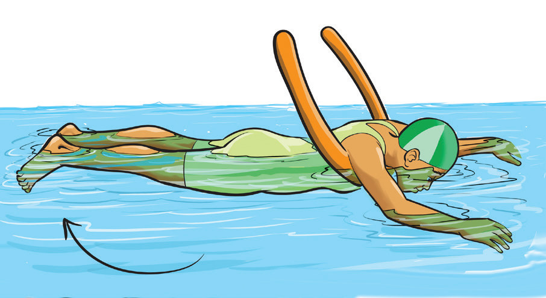
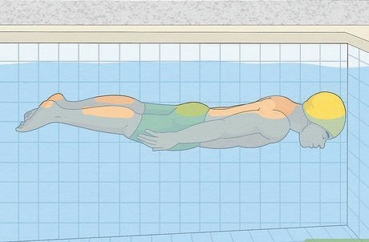

- (iii) Extend your arms forward or position at the sides for balance, Figure 3.12;
- (iv) Keep your legs straight and relaxed to avoid unnecessary movement; and
- (v) When ready to stand up or change position, lift your head, bend your knees, and push down with your hands to return to an upright position.


Figure 3.12: Front float execution
Breathing
Proper breathing control is essential for swimming efficiency, endurance, and relaxation in the water. It allows swimmers to maintain a steady rhythm, reduce fatigue, and improve overall performance. Without proper breathing techniques, swimmers may struggle with coordination and get tired quickly. To develop effective breathing control, swimmers must focus on three key aspects:
Inhaling deeply before submerging
- (i) Before entering the water, swimmers should take a deep breath, filling their lungs with enough air to enhance buoyancy and oxygen supply;
- (ii) Deep inhalation should be done through the nose or mouth; and
- (iii) Holding the breath momentarily before exhaling helps maintain stability and prevents panic while underwater.
Exhaling slowly while underwater
- (i) Exhale gradually through the nose or mouth while the face is submerged;
- (ii) Controlled exhalation prevents water from entering the airway and ensures a smooth breathing cycle;
- (iii) In front crawl and backstroke, swimmers typically exhale through the nose to keep water from entering it. In breaststroke and butterfly, they exhale through both the nose and mouth; and